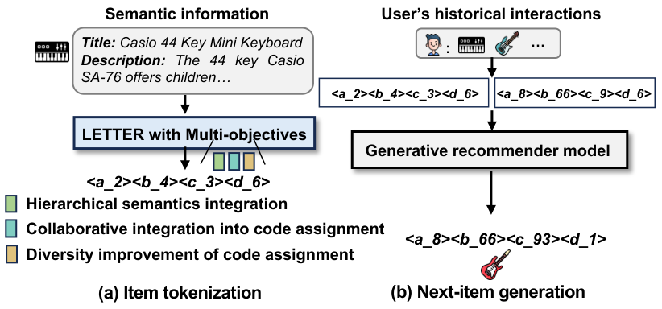
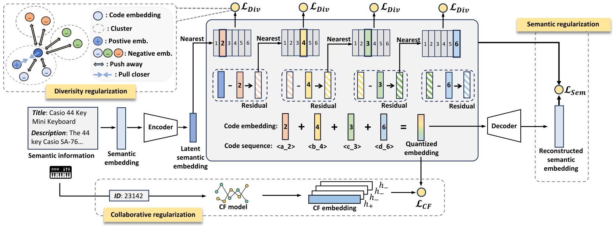

LETTER: Learnable Item Tokenization for Generative Recommendation
Подробное саммари статьи:
Авторы: Wenjie Wang, Honghui Bao, Xinyu Lin, Jizhi Zhang, Yongqi Li, Fuli Feng, See-Kiong Ng, Tat-Seng Chua.
Аффилиации: National University of Singapore; University of Science and Technology of China; The Hong Kong Polytechnic University.
1. Коротко: о чем статья
LETTER - learnable tokenizer для LLM-based generative recommendation. Авторы утверждают, что хорошие item identifiers должны одновременно нести hierarchical semantics, collaborative signals и быть достаточно разнообразными, чтобы не возникал code assignment bias.
Метод строится вокруг RQ-VAE, но добавляет три типа regularization: semantic, collaborative и diversity. Затем LETTER можно поставить поверх разных generative recommenders, включая TIGER и LC-Rec.
2. Мотивация
Textual identifiers понятны LLM, но часто слишком длинные и неоднозначные. ID identifiers компактны, но не несут semantics. Codebook-based identifiers, как в TIGER, лучше, но могут плохо учитывать collaborative behavior и неравномерно использовать codebook. LETTER пытается сделать tokenizer learnable именно под recommendation, а не только под reconstruction.

3. Три regularization цели

- Semantic regularization. RQ-VAE сохраняет hierarchical semantic structure item embeddings.
- Collaborative regularization. Contrastive alignment приближает identifiers items, которые похожи по user behavior.
- Diversity regularization. Loss снижает code assignment bias и помогает codebook использоваться равномернее.
4. Ranking-guided generation loss
Помимо tokenizer regularization, LETTER предлагает ranking-guided generation loss. Идея: обычная token-level generation objective не всегда оптимизирует ranking. Поэтому модель усиливает различение positive item и hard negatives, регулируя temperature и делая generation более ranking-aware.
5. Эксперименты
LETTER тестируется на Instruments, Beauty и Yelp. В сравнении с P5-SemID, P5-CID, textual identifiers, TIGER и LC-Rec кодовые identifiers обычно лучше textual/ID approaches, а LETTER дополнительно улучшает TIGER и LC-Rec. В абляции на Instruments LETTER-TIGER улучшает TIGER по Recall@10 с 0.1058 до 0.1122, а NDCG@10 - с 0.0797 до 0.0831. На Beauty NDCG@10 растет с 0.0331 до 0.0364.
Абляции показывают, что collaborative regularization и diversity regularization полезны по отдельности, но лучший вариант получается при сочетании всех regularizers и ranking-guided loss.
6. Что важно в статье
- LETTER явно разделяет requirements к identifier: semantics, collaboration, diversity.
- Метод показывает, что tokenizer objective может быть многокомпонентным, а не только reconstruction.
- Diversity regularization связывает качество recommendation с балансом code usage.
- Подход можно инстанцировать на разных generative recommenders.
7. Ограничения
- Больше regularizers означает больше hyperparameters и сложнее diagnosis.
- Collaborative regularization может закреплять popularity bias, если user behavior сильно skewed.
- Токены все еще строятся offline; downstream loss не обязательно напрямую обновляет tokenizer как в DIGER.
- В production нужно следить за стабильностью code assignment при переобучении tokenizer.
8. Связь с CoST, ETEGRec и DIGER
CoST заменяет reconstruction objective на contrastive objective. LETTER шире: оно добавляет collaborative alignment и diversity к semantic tokenizer. ETEGRec затем связывает tokenizer и recommender alignment losses end-to-end, а DIGER идет дальше к differentiable SID. LETTER удобно читать как промежуточную точку между TIGER-style RQ-VAE и более tightly coupled training.
9. Вывод
LETTER - сильный baseline для item tokenization. Его ценность в ясной декомпозиции: хороший semantic ID должен быть не только семантически осмысленным, но и collaborative-aware, и не должен использовать codebook с сильным bias. Для практики это означает, что tokenizer нужно оценивать не только по reconstruction, но и по code distribution, behavior alignment и downstream ranking.